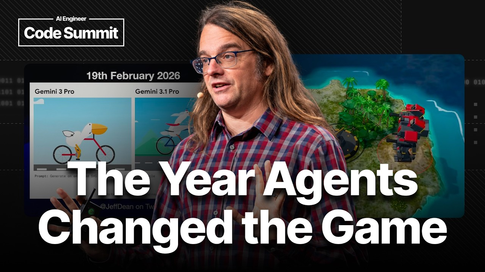
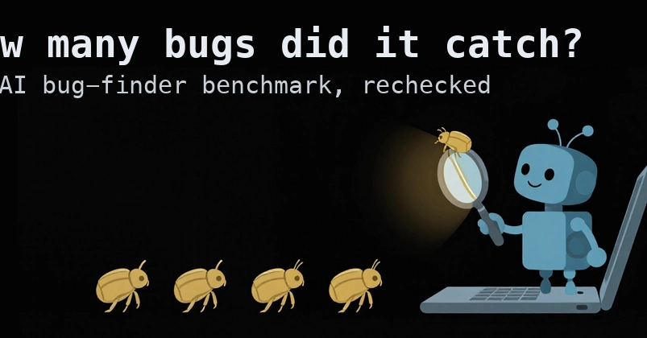
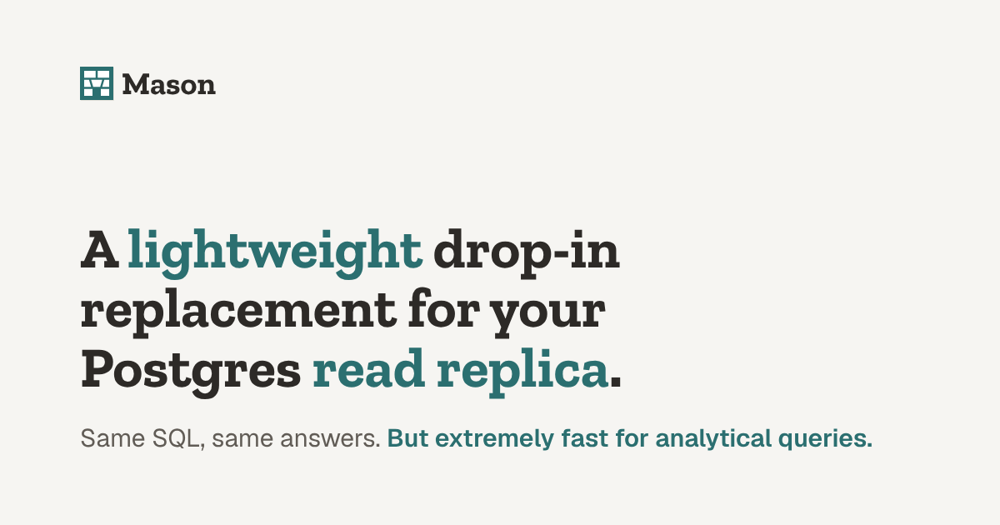
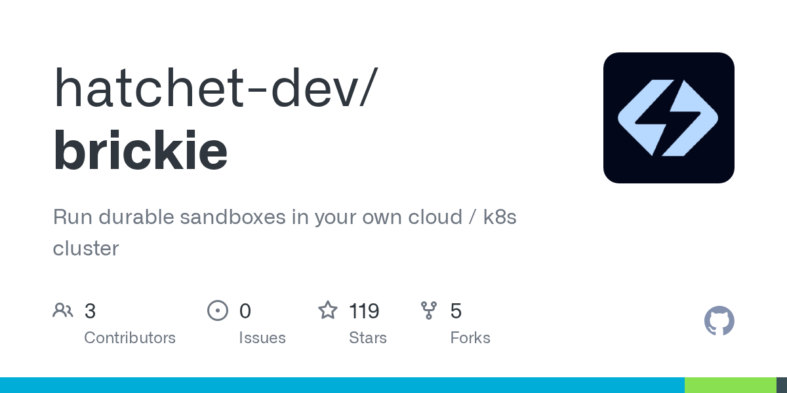

🔥 Top 3 (must read)
Three LLM inflection points in twelve months
Simon wrote up his keynote from the AI Engineer Code Summit. He says LLMs and coding agents made three big jumps in ability in the last twelve months. The post looks at each jump more closely, and the talk video is linked too. Why it matters: It gives you a clear timeline to explain to your team why coding-agent workflows look so different from a year ago.

I rechecked a vendor's AI bug-finder benchmark from its public data
Momentic built, ran and graded QA Bench, and its own product, Mo, came first. The author checked the public data with a short script. The headline numbers hold up, and the post shows how certain those numbers are and what one run of Mo costs. Why it matters: If you are picking an AI testing tool, this shows how to check a vendor's numbers yourself before you buy.

I let AI models interview each other for a job. The liars got hired
One LLM played a candidate with a made-up CV that hid gaps: other people did the database work, the candidate was never on call, and they had been let go. Another LLM played the hiring manager, and the candidates who lied got hired. Why it matters: It is a direct warning for any hiring process that leans on AI screening, or on interviews that never test what a candidate claims.
🛠 Tools & releases
Mason
: a lightweight Postgres read replica built on columnar storage. Columnar storage keeps each column's data together, which makes analytics queries fast. (HN discussion, 88 points)

datasette-charts 0.2a0
+ datasette-agent 0.7a1: you can now ask Datasette Agent's chat for a chart and it builds one. The agent's side panel also navigates better between plugins.
S
🤖 AI for developers
Measuring and mitigating agent sandbox escape with Siren
: Anthropic's work on how often agents escape their sandbox and how to reduce it. Read it if you run coding agents with real system access.

Working with AI
: a new research post on how people work with AI.
Ask HN: Anthropic is accusing my company of distilling. How can I prove I'm not?
: a busy thread (228 points, 166 comments). "Distilling" means training your own model on another model's outputs. Worth a look if your team's product is built on a model vendor's API.
N
👔 Engineering & teams
The QA Bench recheck and the AI interview experiment (see Top 3) are today's two EM reads: one is about checking vendor claims, the other about hiring signals.
🎯 For me
QA Bench recheck
Automation testing + AI: , useful before you add an AI bug-finder to your CI pipeline.
Simon's three inflection points
Coding agents: and Siren sandbox escape.
The liars got hired
EM / hiring: .
Nothing new today for Node.js, React or Flutter.
💡 App ideas & indie builds
Brickie
: deploys sandboxes inside your own AWS account. User problem: teams want isolated places to run code (for example, code from an AI agent) but do not want that code or data on a third-party cloud. Inspiration: "self-hosted in your own cloud account" turns a SaaS idea into something security-minded companies can actually adopt. (HN)

🎓 Try this
Recheck one vendor benchmark yourself. Pick an AI testing or coding tool your team is looking at. Then follow the method in this post: get the public data, recompute the headline numbers with a short script, and check how certain they are and what one run costs.